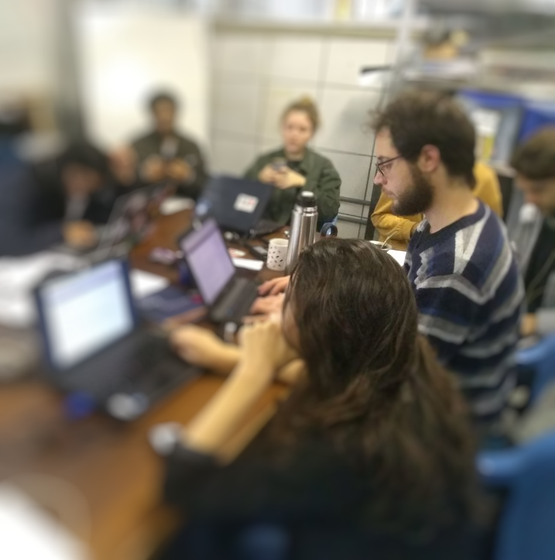

<section class="page-section mb-0" id="about">
    <div class="container">
        <!-- About Section Heading-->
        <h2 class="page-section-heading text-center text-uppercase text-secondary mb-0">Sobre mi </h2>
        <!-- Icon Divider-->
        <div class="divider-custom">
            <div class="divider-custom-line"></div>
            <div class="divider-custom-icon"><i class="fas fa-star"></i></div>
            <div class="divider-custom-line"></div>
        </div>
        <!-- About Section Content-->
        <section class="p-4 d-flex justify-content-center">
            
        </section>
        
        <div class="row">
            <h4> Persona: {{persona.nombre}} {{persona.apellido}} <input type="submit" value="modificar" class="btn btn-secondary m-3 btn-sm" > </h4>
        </div>
        <div class="row">
            <div class="col-lg-4 ms-auto"><p class="lead">Freelancer is a free bootstrap theme created by Start Bootstrap. The download includes the complete source files including HTML, CSS, and JavaScript as well as optional SASS stylesheets for easy customization.</p></div>
            <div class="col-lg-4 me-auto"><p class="lead">You can create your own custom avatar for the masthead, change the icon in the dividers, and add your email address to the contact form to make it fully functional! <input type="submit" value="modificar" class="btn btn-secondary m-3 btn-sm" ></p></div>
        </div>
    </div>
</section>
